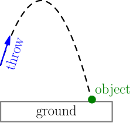
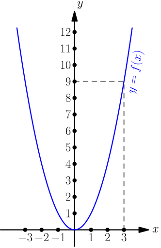
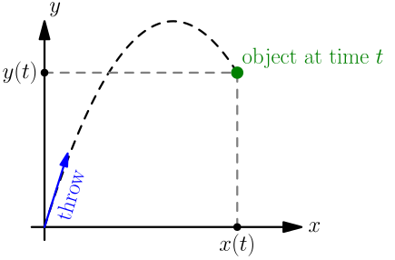
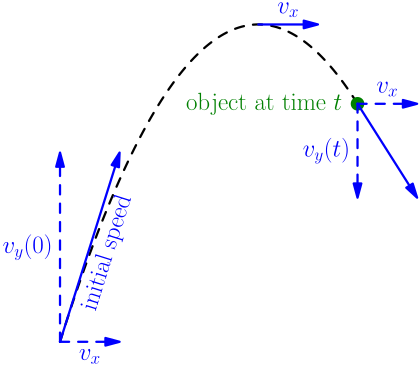

Derivatives¶
Derivatives are one of my favorite things in math. At first they seem like they will be complicated and annoying to work with, but everything turns out to be surprisingly easy after all. Derivatives are also a very useful concept that we need for doing many things that don't seem to have anything to do with derivatives at first sight. For example, you can use derivatives for doing simple physics things for games. There is an example of that at the end of this chapter.
This chapter assumes that you know what limits are. If you have never heard of them before, I highly recommend reading the limit section in the infinity chapter first. Otherwise you'll be really confused.
Parabolas¶
Multiplying a number with itself like $x \cdot x$ can be also written as
$x^2$. See the introduction page for details. In python,
$x^2$ is written like x**2.
We'll use parabolas as examples later, so I want to make sure that you know what is a parabola.
Let $x \in \{0,1,2,3,...\}$. Let's calculate $x \cdot x$ and see what kind of values we get:
>>> for x in range(10):
... print(x, x**2)
...
0 0
1 1
2 4
3 9
4 16
5 25
6 36
7 49
8 64
9 81
>>>
If you haven't seen this sequence of numbers before, they look quite weird and
somewhat random. Let's try a thing: for each $x$, we'll print $x \cdot x$
spaces followed by o.
>>> for x in range(10):
... print((' ' * (x**2)) + 'o')
...
o
o
o
o
o
o
o
o
o
o
>>>
Ooo, that's neat! Would you have guessed that multiplying a number with itself looks like that?
We can extend the curve by choosing negative values as well:
>>> for x in range(-10, 10):
... print((' ' * (x**2)) + 'o')
...
o
o
o
o
o
o
o
o
o
o
o
o
o
o
o
o
o
o
o
o
>>>
The curve looks similar but flipped because $(-x)^2=x^2$ as we proved on the
introduction page. For example, $(-2)^2 = 2^2 = 4$, and that's
why we have two os with 4 spaces in front of them. These curves are called
parabolas.
If you throw an object, it flies roughly like this:

The shape looks like a parabola. Maybe this world works so that multiplying numbers with themselves has something to do with throwing objects in the air, and the shape is a parabola? We'll find out in this chapter, but unfortunately we need to know a lot of other stuff for figuring it out. The good news is that the other stuff will be useful for other things than figuring out whether throwing an object creates a parabola.
Before we continue, let me show you how we represent these things in math. The "numbers multiplied by themselves" thing is usually represented with a function. For example, let's define a function that gives us parabolas:
Let $f(x)=x^2$.
Now $f(1)=1$, $f(2)=4$, $f(3)=9$ and so on. We get the parabola values.
A quick way to get an idea of what a function is like is to draw a graph of it. For example, here is the graph of $f$:

The $y=f(x)$ part means that if we take a number from the $x$ axis, then $f$ tells us the corresponding number on the $y$ axis. For example, $f(3)=3^2=9$.
<theelous3> so the height of x, or x's "y", can be described as
f(x), where f = lambda x: x**2
Note that the graph is nice and smooth, not just dots; the $x$ can be any real number because there's nothing wrong with doing something like $1.2345 \cdot 1.2345$.
Understanding the Physics¶
We need to understand what speed is in order to understand the object throwing thing.
When you drive a car, the car's speed meter shows the speed as something like "80 km/h" (kilometres per hour) or "50 mph" (miles per hour). This gives us a strong clue about how speeds can be calculated: we take a distance, like 80 kilometres (80000 metres), and we divide it by a period of time, like 1 hour.
$$\begin{align}\frac{80\text{km}}{1\text{h}} = 80\text{km/h}\end{align}$$Here are some single-letter variable names commonly used in physics:
- $t$ means time.
- $x$ means the place of the car, just like it means a horizontal location in the above $y=f(x)$ graph.
- $v$ means speed. It's short for velocity. Speed and velocity are not actually the same thing, but we don't call the speed $s$ in physics because $s$ also has other important meanings, and it would be confusing.
With these variable names, we can write this "speed is travelled distance divided by time" idea like this:
$$\begin{align}v = \frac{\Delta x}{\Delta t}\end{align}$$That looks like a mess, but let me explain. $\Delta t$ means a change in time; for example, if you started the speed measuring at 8AM and finished at 8.25AM, then $\Delta t = 25\text{ minutes}$. Similarly, $\Delta x$ means how much the place of your car changed during the $\Delta t$ time. The $\Delta$ is Greek delta letter, and mathematicians like to use it for denoting differences and changes of things for some reason.
Anyway, if you want to measure the speed of your car and it happens to be about 80 km/h, do you need to drive for exactly 80 kilometres and measure the time it took? Of course not. The above formula also works with smaller periods of time. For example, if your car moved 20 metres in 1 second:
$$\begin{align}\Delta x &= 20\text{ metres} = \frac{20}{1000}\text{ kilometres} \\ \Delta t &= 1\text{ second}=1/60\text{ minutes}=\frac{1/60}{60}\text{ hours} \\ v &= \frac{\Delta x}{\Delta t} = \frac{\frac{20}{1000}\text{ km}}{\frac{1/60}{60}\text{ h}} \ \mathop{=}^{\text{py}}\ 72.0 \text{km/h}\end{align}$$I used $\overset{\text{py}}{=}$ to denote using Python to do a boring calculation.
>>> (20/1000) / ((1/60)/60)
72.0
In fact, if you tell me that you drove 80 kilometres in 1 hour, I have no idea how fast you drove. Maybe you drove some of those 80 kilometres at a speed of 120km/h on a motorway, and then slowed down and drove at 50km/h on a smaller road? The total time it took to travel those 80 kilometres can still add up to 1 hour. What I actually know is that your average speed was 80 kilometres per hour; I have no idea how fast you drove at a specific instance. Let's correct the formula:
$$\begin{align}v_\text{average} = \frac{\Delta x}{\Delta t}\end{align}$$So, how do we calculate the speed at a specific instance, if all we can do is average speeds? First of all, for the place and speed at a time $t$, let's use $x(t)$ and $v(t)$ instead of plain $x$ and $v$ because we'll need the function notation thing soon. For example, now $x(0)$ means the place of the car at $t=0$; that is, when you started driving.
Next, we need a small $\Delta t$, so that the car can't accelerate much. Consider how $\Delta t = 1 \text{ second}$ gave us a much better result than $\Delta t = 1 \text{ hour}$. In the 1 second thing, the speed can't change very much; that is, the actual speed was likely something close to 72km/h all that time. This isn't true if you accelerated really fast and the speed went from 65km/h to 80km/h in 1 second, or you drove into a wall and the speed dropped very fast, but for these cases, we can still get a somewhat accurate estimate of the speed by choosing $\Delta t = 0.000001\text{ seconds}$ or something.
$$\begin{align}v(t) \approx \frac{\Delta x}{\Delta t}, \qquad \text{$\Delta t$ is small}\end{align}$$Here $\approx$ means "approximately $=$". If we take a limit with $\Delta t \to 0$, we get a precise speed:
$$\begin{align}v(t) = \lim_{\Delta t \to 0} \frac{\Delta x}{\Delta t}\end{align}$$This is the derivative of $x(t)$. Next time you're driving, you can think about how the speed meter of your car tells you the derivative of your location.
The derivative can be also written with $d$ instead of $\Delta$ and $\lim$, like this:
$$\begin{align}v(t) = \frac{dx}{dt} = \lim_{\Delta t \to 0} \frac{\Delta x}{\Delta t}\end{align}$$Originally $dx$ was an "infinitely small" change of place, and $dt$ was an "infinitely small" time period. Nowadays we don't use infinitely small numbers in mathematics because we have limits, but the $\frac{dx}{dt}$ notation is still used.
Our First Derivative¶
For a moment, let's pretend that we have an object whose place is something like $x(t)=t^2$; that is, it is a parabola of some kind. Let's try to find the speed of the object.
$$\begin{align}v(t) = \lim_{\Delta t \to 0} \frac{\Delta x}{\Delta t} = \lim_{\Delta t \to 0} \frac{\Delta(t^2)}{\Delta t}\end{align}$$Hmmm, what can we do next? We don't really know what $\Delta(t^2)$ is, so let's find out. Hopefully it turns out to be something nice.
When calculating the speed, we need to think about two moments:
- Time $t$, before the small time increment $\Delta t$. Place is $x(t)$.
- Time $t+\Delta t$, after the small time increment. Place is $x(t+\Delta t)$.
During the time period, the time increases by $\Delta t$; that's why it ends up being $t+\Delta t$.
Similarly, the car's place changes $\Delta x$. But we also know that its place was $x(t)$ before the change, and it is $x(t+\Delta t)$ after the change:
$$\begin{align}t\ \xrightarrow{\text{a short time later}}\ t+\Delta t\end{align}$$$$\begin{align}x(t)\ \xrightarrow{\text{a short time later}}\ x(t+\Delta t)\end{align}$$$$\begin{align}x(t)\ \xrightarrow{\text{a short time later}}\ x(t)+\Delta x\end{align}$$$$\begin{align}x(t) + \Delta x = x(t+\Delta t)\end{align}$$Next we can find $\Delta x$ by substracting $x(t)$ on both sides:
$$\begin{align}\Delta x = x(t+\Delta t) - x(t)\end{align}$$Let's plug it into the $v(t)$ limit:
$$\begin{align}v(t) = \lim_{\Delta t \to 0} \frac{\Delta x}{\Delta t} = \lim_{\Delta t \to 0} \frac{x(t+\Delta t)-x(t)}{\Delta t}\end{align}$$It doesn't look so hopeless anymore! We said that $x(t)=t^2$ with any $t$, and that must also work at the end of the time period, so we can replace $t$ with $t+\Delta t$ to get $x(t+\Delta t)=(t+\Delta t)^2$. Rest of this is just calculating the limit.
Handy thing
$A^2-B^2 = (A+B)(A-B)$
This is proved on the basics page. In this case, we need to plug in $A=\color{green}{t+\Delta t}$ and $B=\color{blue}{t}$.
That's quite neat! Everything cancelled out so nicely that we ended up with just $2t$. So, if we have an object whose place is a $t^2$ parabola for whatever reason, then calculating its speed is simple as $2t$. For example, at time $t=3\text{ seconds}$, the speed is:
$$\begin{align}v(3\text{ seconds}) = 2 \cdot (3\text{ seconds}) = 6\ \underbrace{\text{seconds}}_\text{wut??}\end{align}$$Something is wrong here. The speed was supposed to be kilometres per hour or metres per second or some other "distance per time" thing, but now it is seconds. The problem is that $x(t)=t^2$ doesn't make much sense either:
$$\begin{align}x(3\text{ seconds}) = (3\text{ seconds})^2 = 3^2\ \text{seconds}^2 = 9\ \underbrace{\text{seconds}^2}_\text{wut}\end{align}$$We were supposed to get metres, but we got seconds multiplied by seconds, whatever that is.
Why is it broken?¶
We saw that $x(t)=t^2$ gave us nonsense, because $t$ is in seconds but the place should be in metres. Does this mean that the place can't be a parabola? It doesn't, because $t^2$ is not the only $t$ parabola there is.
Let's go back to the parabola printing thing, and instead of graphing $x^2$, let's also try things like $2x^2$ and $3x^2$:
>>> for x in range(-5, 5):
... print((' ' * (x**2)) + 'o')
...
o
o
o
o
o
o
o
o
o
o
>>> for x in range(-5, 5):
... print((' ' * (2*x**2)) + 'o')
...
o
o
o
o
o
o
o
o
o
o
>>> for x in range(-5, 5):
... print((' ' * (3*x**2)) + 'o')
...
o
o
o
o
o
o
o
o
o
o
>>>
By the way, things like $2$ and $3$ are called constants because they are always the same, regardless of the $x$ value; they "stay constant" as $x$ changes.
Anyway, these things get harder and harder to see correctly, but they are parabolas. So maybe we can find a constant $A$ so that $A \cdot t^2$ is seconds, and then we could do $x(t)=At^2$? One such $A$ value is $A=5 \frac{\text{metres}}{\text{seconds}^2}$, because then $A \cdot t^2$ gives $\frac{\text{metres}}{\text{seconds}^2} \cdot \text{seconds}^2$, and it cancels to just metres. In fact, any $A$ value with $\frac{\text{metres}}{\text{seconds}^2}$ will do.
With the $A$ in front, maybe we'll also get a speed function that isn't broken? Let's calculate the derivative again and see what we get.
$$\begin{align}v(t) &= \lim_{\Delta t \to 0} \frac{x(t+\Delta t)-x(t)}{\Delta t} \\ &= \lim_{\Delta t \to 0} \frac{A \cdot (t+\Delta t)^2 - At^2}{\Delta t} \\ &= \lim_{\Delta t \to 0} \frac{A \cdot ((t+\Delta t)^2 - t^2)}{\Delta t} \\ &= \lim_{\Delta t \to 0} \left( A\frac{((t+\Delta t)^2 - t^2)}{\Delta t} \right) \\ &= A\color{blue}{\lim_{\Delta t \to 0} \frac{(t+\Delta t)^2 - t^2}{\Delta t}} \\ &= A\ \color{blue}{2t} \\ &= 2At\end{align}$$The blue limit is exactly what we had before we added the $A$, so there's no need to calculate it all again. Now $2At$ is $2 \cdot \frac{\text{metres}}{\text{seconds}^2} \cdot \text{seconds}$. One of the seconds cancels, and we have $\frac{\text{metres}}{\text{seconds}}$, just like we were supposed to have. The 2 doesn't matter because two times some metres per second value is still going to be metres per second; $2At$ and $At$ are both speeds, but $2At$ is a bigger speed.
Acceleration¶
Speed tells you how quickly the place changes, because it's the derivative of the place. That's great, but we can take a step further: we can also take the derivative of the speed to get something that describes changes of the speed. It's called acceleration, and we'll call it $a$. So, acceleration is the derivative of the derivative of the place.
$$\begin{align}v &= \frac{dx}{dt} = \lim_{\Delta t \to 0} \frac{\Delta x}{\Delta t} \\ a &= \frac{dv}{dt} = \lim_{\Delta t \to 0} \frac{\Delta v}{\Delta t}\end{align}$$The $\Delta v$ is metres per second and $\Delta t$ is seconds, so accelerations are metres per second per second, that is:
$$\begin{align}\frac{\text{metres/second}}{\text{second}} = \frac{\text{metres}}{\text{second} \cdot \text{second}} = \frac{\text{metres}}{\text{second}^2}\end{align}$$For example, if the speed of your car changes from 10 metres per second to 15 metres per second during 2 seconds, your average acceleration is...
$$\begin{align}\frac{\Delta v}{\Delta t}=\frac{15\text{m/s} - 10\text{m/s}}{2\text{s}} = \frac{15-10}{2} \text{m}/\text{s}^2 \ \mathop{=}^\text{py}\ 2.5\text{m}/\text{s}^2\end{align}$$...2.5 metres per second per second. On average, the speed increases by 2.5m/s every second.
Here is a famous experiment. It shows that the acceleration caused by gravity is the same for objects with different masses. Usually the feather would be slowed down by air a lot, but there is no air on the moon.
The acceleration caused by gravity happens to be about $9.8\text{m}/\text{s}^2$ on Earth. The moon has much less mass than Earth, so it's about 6 times smaller on the moon and the objects fall slower than on Earth.
Other Parabolas¶
So far we have used Python to draw graphs of $Ax^2$ where $A$ is a constant like $1$, $2$ or $3$. If we add another constant $D$ (you'll see why I skipped $B$ and $C$ soon) at the end like $Ax^2 + D$, we also get a parabola, but it has moved. For example, let's try $A=1$ and $D=10$:
>>> for x in range(-5, 5):
... print((' ' * (x**2)) + 'o')
...
o
o
o
o
o
o
o
o
o
o
>>> for x in range(-5, 5):
... print((' ' * (x**2 + 10)) + 'o')
...
o
o
o
o
o
o
o
o
o
o
>>>
It is the same parabola, but it moved because we are always adding 10 more
spaces in front of the o.
The parabola moves differently if we add yet another constant $E$, and replace $x$ with $x-E$. Here is an example with $E=2$:
>>> for x in range(-5, 5):
... print((' ' * ((x-2)**2)) + 'o')
...
o
o
o
o
o
o
o
o
o
o
>>>
This time, the parabola moved down. We gave $x$ the values $-5,-4,-3,...,1,2,3,4$,
so $x-2$ got the values $-7,-6,-5,...,1,2$. We would get the same result with
range(-7, 3) instead of range(-5, 5) and no x-2, but this shows how
replacing $x$ with $x-E$ shifts the parabola.
Putting all this together gives $A \cdot (x-E)^2 + D$. With this, we can change the parabola in quite a few different ways:
Handy thing
$(a-b)^2 = a^2 - 2ab + b^2$
This is proved on the basics page. In this case, we need to plug in $a=x$ and $b=E$.
- We can stretch the parabola by choosing a bigger $A$.
- We can move the parabola around with $E$ and $D$.
Let's expand the parabola thing we got and see what we get.
$$\begin{align}A \cdot (x-E)^2 + D &= A \cdot (x^2-2xE+E^2) + D \\ &= Ax^2 - A2xE + AE^2 + D \\ &= Ax^2 + (-2AE)x + (AE^2 + D)\end{align}$$This looks like a horrible mess, but if we now let $B=-2AE$ and $C=AE^2+D$, then $B$ and $C$ are also constants because there's no $x$ in them. We get this:
$$\begin{align}Ax^2 + Bx + C\end{align}$$All the parabolas that we have looked into so far can be written like this with some $A$, $B$ and $C$ values. Furthermore, all $Ax^2+Bx+C$ graphs are parabolas, because it's possible to find $D$ and $E$ values from the $B$ and $C$ values. Many school books say something like "$y=Ax^2+Bx+C$ is a parabola", but I thought it might be nice to explain how it is actually $y=x^2$ stretched and shifted.
Is the throwing thing a parabola?¶
Now we know everything we need for figuring out whether throwing an object in the air makes it fly in a parabola shape.
Let $t$ be time since we threw the object, so $t=0$ means the throwing moment. We'll call the coordinates of the object $x(t)$ and $y(t)$, so that $x(0)=0$ and $y(0)=0$; that is, the $x$ and $y$ axises cross at the throw location. Then we'll try to find the $x(t)$ and $y(t)$, and see if it looks like a parabola.

When we throw an object, we let it fly however it wants, but we give it an initial speed by throwing it. We can think of that speed as two components: a horizontal speed $v_x$, and a vertical $v_y$ speed. If we assume that air resistance is small, $v_x$ stays the same during the entire throw because nothing slows down the object, but $v_y$ obviously doesn't stay the same. For example, the object's $y$ speed is zero at the highest point, and there $v_y=0$. After that, $v_y$ is negative because down means less $y$. That's why we'll write $v_y(t)$ instead of plain $v_y$.

In the time $t$ of the picture, $\color{blue}{v_y(t)}$ is negative. There's nothing wrong with a negative speed; the object is just moving down, and we chose that more $y$ means up.
Let's start by writing down everything we know, and we'll try to find $x(t)$ and $y(t)$ based on that.
- $x(0)=0$
- $y(0)=0$
- $v_x = x'(t)$ because speed is the derivative of location
- $v_x$ stays the same during the entire throw
- $v_y(t)=y'(t)$
- ${v_y}'(t) = -g$, because gravity pulls the object down with acceleration $g$. We need a minus because down means less $y$; ${v_y}'(t)=g$ would mean that it accelerates up.
- $v_y(0)$ is the vertical throwing speed, so it must be positive.
I'll use these numberings on top of equal signs to show when I use them, like $\overset{(2)}=$.
Let's find $x(t)$. Its derivative is $v_x$, so maybe $x(t)=v_xt$? Maybe it is, but we need to check that $v_xt$ works with everything we know about $x(t)$:
$$\begin{align}& x(t) = v_xt \\ \\ (1):\ & x(0) = v_x \cdot 0 = 0 \qquad \text{ok} \\ (3):\ & x'(t) = \frac{d}{dt}(v_xt) \mathop{=}^{(4)} v_x\cdot\frac{d}{dt}t = v_x \cdot 1 = v_x \qquad\qquad \text{ok}\end{align}$$Ok, now we know that $x(t)=v_xt$.
Let's find $y(t)$. We know that $y'(t)=v_y(t)$, so it seems like we need $v_y(t)$ first. Its derivative is $-g$, so maybe $v_y(t)=(-g)t$ similarly to $x(t)=v_xt$?
$$\begin{align}& v_y(t) = (-g)t \\ \\ (6):\ & {v_y}'(t) = \frac{d}{dt}((-g)t) = (-g)\cdot\frac{d}{dt}t = (-g)\cdot1 = -g \qquad \text{ok} \\ (7):\ & v_y(0) = (-g) \cdot 0 = 0 \qquad \color{red}{\text{not ok}}\end{align}$$It's not positive, even though it was supposed to be. But how about $v_y(t) = (-g)t + D$ where $D$ is a constant? The derivative stays the same, because the derivative of a constant is zero and $+0$ does nothing, but (7) isn't so broken anymore:
$$\begin{align}& v_y(t) = (-g)t + D \\ \\ (6):\ & \text{ok} \\ (7):\ & v_y(0) = (-g) \cdot 0 + D = D \qquad \text{ok if $D$ is positive}\end{align}$$Now remember that $v_y(0)$ is the vertical component of the throwing speed, so $D$ is actually just that.
Next we need $y(t)$. Its derivative is $v_y(t)=(-g)t+D$, so we need to come up with a function whose derivative is $(-g)t+D$. We'll use these facts that we know:
- $\frac{d}{dt}(t^2) = 2t$
- $\frac{d}{dt}(t) = 1$
- Constants can be moved to front when taking derivatives
- If we have things $+$'ed together, we can derivative each thing separately and $+$ the results
Let's get started.
$$\begin{align}\frac{d}{dt}(t^2 + t) &= 2t + 1 \\ \frac{d}{dt}\Bigl(\frac 1 2 t^2 + t\Bigr) &= \frac 1 2 \cdot 2t + 1 \\ &= t+1 \\ \frac{d}{dt}\Bigl(\frac{-g}{2}t^2 + t\Bigr) &= \frac{-g}{2} \cdot 2t + 1 \\ &= -gt+1 \\ \frac{d}{dt}\Bigl(\frac{-g}{2}t^2 + Dt\Bigr) &= -gt + D \cdot \frac{d}{dt}(t) \\ &= -gt+D\end{align}$$It's getting messier, but let's see if it works:
$$\begin{align}& y(t) = \frac{-g}{2}t^2 + Dt \\ \\ (2):\ & y(0) = \frac{-g}{2} \cdot 0^2 + D \cdot 0 = 0 \qquad \text{ok} \\ (5):\ & y'(t) = -gt+D = (-g)t + D = v_y(t) \qquad \text{ok}\end{align}$$Note how $\frac{-g}{2}t^2 + Dt$ looks like a parabola. We needed the $t^2$ to make the derivative contain $-gt$; that is, $t$ multiplied by a constant.
We found the $x(t)$ and $y(t)$:
$$\begin{align}x(t) &= v_xt \\ y(t) &= \frac{-g}{2}t^2 + Dt\end{align}$$This looks a lot like a parabola, but we are not done yet! Now $y(t)$ tells us how the height changes over time, but we want to know what the height is at a given $x$ place, like in our $y=f(x)$ graphs. So, next we need a function $f$ so that $y=f(x)$ at any time; that is, $y(t)=f(x(t))$ in this case. Then we want to know if the graph of $f$ is a parabola. Let's find the $f$:
$$\begin{align}f(x(t)) &= y(t) \\ f(v_xt) &= \frac{-g}{2}t^2 + Dt\end{align}$$Let's add another variable called $x$. We also confusingly have an $x(t)$ function, but we won't need the $x(t)$ function anymore after adding this $x$ variable, so I think this is fine.
$$\begin{align}\text{let } x &= \color{green}{v_xt} \\ \frac{x}{v_x} &= \color{blue}t\end{align}$$$$\begin{align}f(\color{green}{v_xt}) &= \frac{-g}{2}\color{blue}{t}^2 + D\color{blue}t \\ f(x) &= \frac{-g}{2}\left(\frac{x}{v_x}\right)^2 + D\frac{x}{v_x} \\ &= \frac{-g}{2} \cdot \frac{x^2}{{v_x}^2} + \frac{D}{v_x} x \\ &= \frac{-g}{2{v_x}^2}x^2 + \frac{D}{v_x} x\end{align}$$Let $A = \frac{-g}{2{v_x}^2}$, $B=\frac{D}{v_x}$ and $C=0$. Then $A$, $B$ and $C$ are constants because they don't depend on $x$.
ath: f(x) &= \frac{-g}{2{v_x}^2}x^2 + \frac{D}{v_x} x &= Ax^2 + Bx + C
So, if we throw an object in the air, the shape it flies in is a parabola!
tl;dr
This world happens to work so that if you throw an object, it accelerates down with constant acceleration $g \approx 9.8 \rm m / \rm s$ and moves forward with very little acceleration. $-g$ is the derivative of the derivative of the height. With some messy math, we can show that the curve it flies in is the graph $y=Ax^2+Bx+C$, which is a parabola.